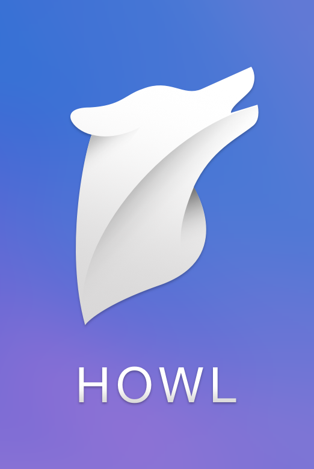
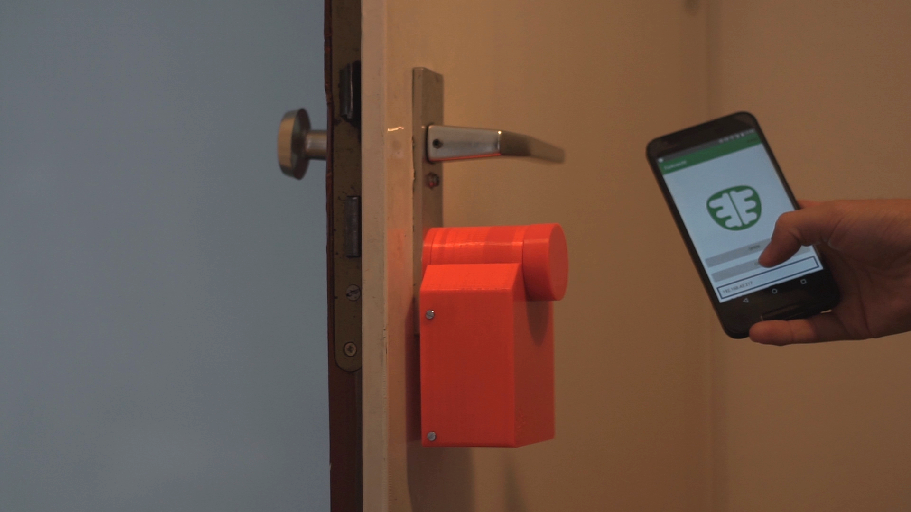
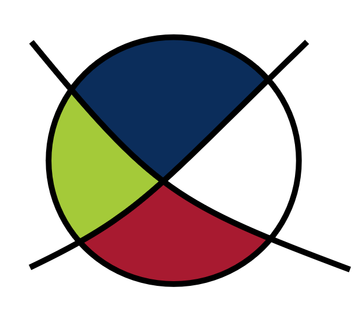
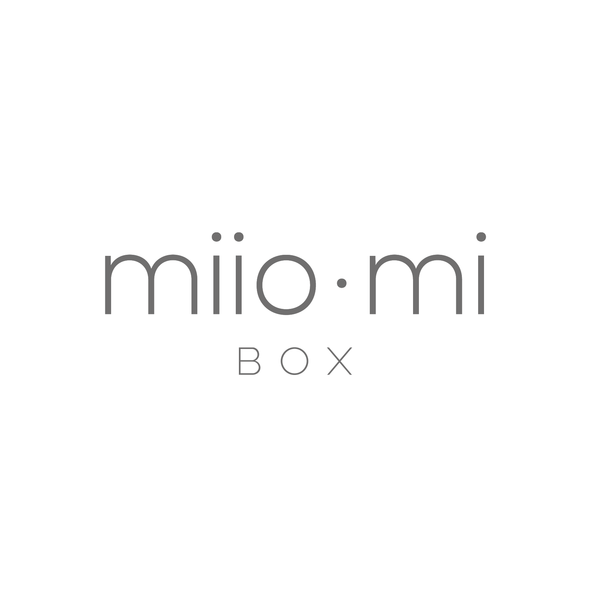
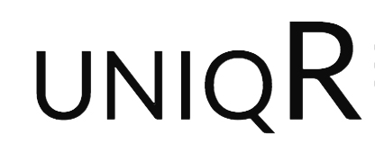
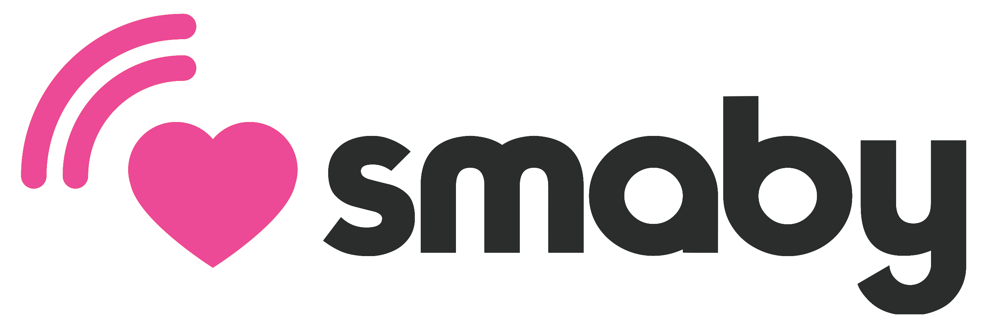
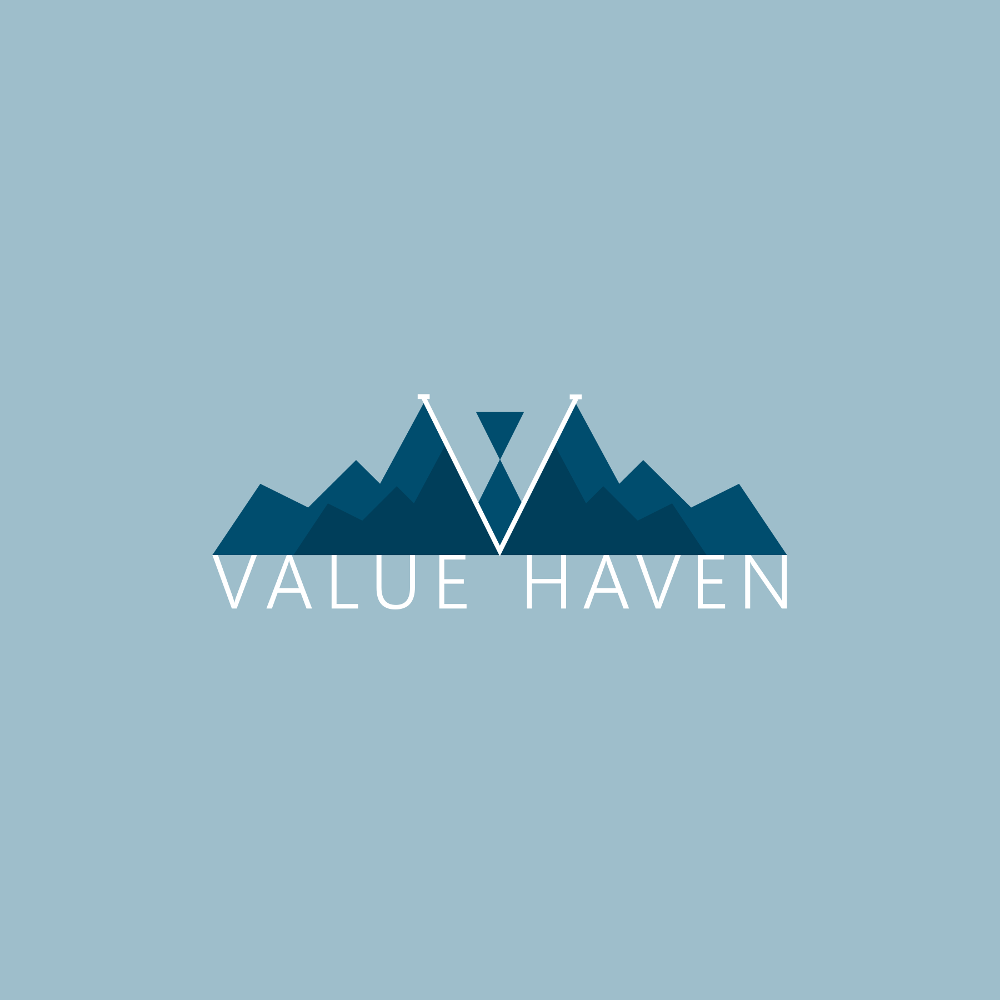
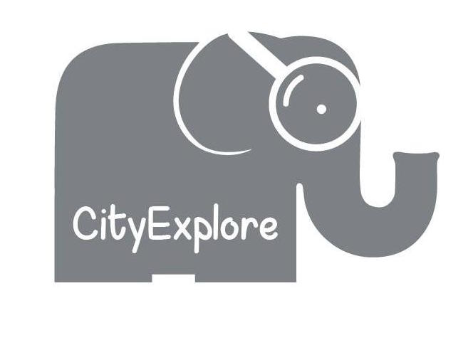
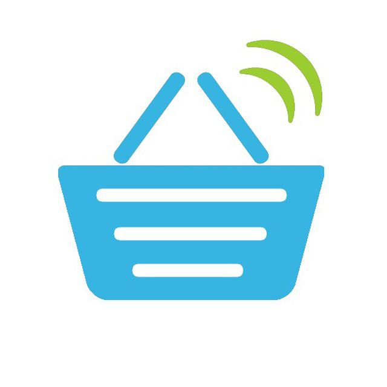
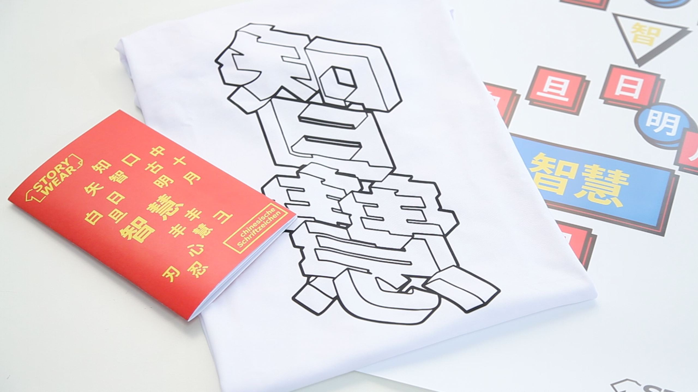

Die Finalisten
German IT Jobs
German IT Jobs vermittelt umfangreich geprüfte Programmierer aus der ganzen Welt an deutsche Unternehmen. Unsere Vision ist Programmierer-Recruiting durch Datenanalyse maximal effizient zu machen. Dazu erhalten wir eine Stellenausschreibung, finden weltweit passende Kandidaten und führen ein umfangreiches Screening durch. Die Screenings prüfen einerseits auf Visa-Fähigkeit und andererseits auf Programmierkenntnisse durch stellenspezifische Programmiertests. Der Arbeitgeber erhält von uns so die besten visa-fähigen Kandidaten. Dieses Screening ist hochgradig automatisierbar und zudem mit Datenanalyse kombinierbar. Zu unseren Kunden gehören mittlerweile u.A. Echobot, Hitmeister und RegioHelden. Neben den Gründern arbeiten mittlerweile Andreas, Florian, Oksana und Raphael im Team. Zuletzt haben wir einen Java-Entwickler aus der Ukraine an Knuddels vermittelt.
http://www.germanitjobs.com
https://facebook.com/germanitjobs
Howl

Teammitglieder: Tomás Sandoval, Sebastián Méndez, Rodrigo Herrera
Veranstaltungen sind Gelegenheiten, die viele Menschen zusammenbringen. Ob in Clubs oder Bars, beim Sport, zum Networking oder in der Politik. Unsere Mission ist es ein soziales Netzwerk zu etablieren, das die Leute vereint und Menschen darüber informiert welche Veranstaltungen im Moment am beliebtesten für sie sind. Howl ist eine Plattform die dank unserer Technologie lernt was dich interessiert und dir zeigt wo deine Freunde hingehen bzw. was sie gerade treiben. Auf der B2B Seite bietet unsere Plattform Veranstaltern die Möglichkeit ihre Zielgruppe einfach zu erreichen und ihr Geschäft bzw. ihre Veranstaltungen zu promoten.
Lackey

Teammitglieder: Yasmin Bianca Kobori Belck, Alexej Gerstmaier, Friedrich Klinger
Gib Deinen Gästen bequem Zugang zu Deiner Wohnung, schau, ob der Postbote schon vorbei gekommen ist und betritt Dein Zuhause, ohne erst nach Deinem Schlüssel zu suchen. Die Installation dauert nur fünf Minuten und Deinen alten Schlüssel kannst Du auch weiterhin gebrauchen. Durch Anwendung von state of the art kryptographischen Algorithmen sowie einem Einbruch-Alarm erhält Dein Zuhause auch noch ein Sicherheitsupgrade. Du bist schon Teil der Sharing-Economy durch Airbnb, Couchsurfing oder dergleichen? Dann wird Dein Leben durch lackey's Abrechnungsservice nun um einiges einfacher. Sicher, zuverlässig und einfach - das ist lackey.
(www.lackey.eu)
Legis

Teammitglieder: Adam Kirschstein, Sydney Bender, Philipp Hrivatakis, Thorben Röver, Martin Reinhard, Michael Wiegner
Wir haben ein Social Software-Start-Up namens LEGIS gegründet. Wir entwickeln eine moderne Mitbestimmungsplattform in App-Format, die zusammen mit einer neuartigen Parteiinitiative die Demokratie aufmischen wird. Auf unserer Open-Source- Plattform könnt ihr eure politischen Ideen präsentieren, diskutieren und anderen eure Stimme geben oder direktdemokratisch bei Entscheidungen über aktuelle politische Fragen mitbestimmen. Unser langfristiges Ziel ist es Innovation direkt in die Politik zu bringen. Mit Hilfe einer neutralen Redaktion und der privaten Bereitstellung von Mitbestimmungstools (für Universitäten & Unternehmen) bauen wir auf finanzielle Selbstständigkeit.
Melody Scanner
Unser Ziel ist es, mehr Menschen für das Musizieren zu begeistern und eine neue Generation von Musikern zu schaffen, indem wir die Möglichkeit bieten, Notenblätter von beliebigen Stücken zu erzeugen. Damit wollen wir die Motivation am Musizieren fördern und das Erlernen eines Instruments vereinfachen. Dafür bieten wir mit Melody Scanner ein innovatives Werkzeug zur automatisierten Transkription von Musik, welches es Musikern ermöglichen soll, schnell und jederzeit ein Notenblatt aus einem Musikstück zu generieren und dieses in einer digitalen Notenmappe zu verwalten.
www.melodyscanner.com
Miiomi Box

Teammitglieder: Roshni Kumar
Die Miiomi Box ist ein Überraschungspaket mit einer besonderen Auswahl an koreanischen Kosmetikprodukten, welche u.a. auch im Rahmen eines Abonnements erhältlich ist. Miiomi gibt Frauen die Möglichkeit, die neusten Trends der südkoreanischen Beautyindustrie einmal selbst für wenig Geld auszuprobieren. Der koreanische Kosmetikmarkt boomt und übertrifft damit weltweit etablierte Marken durch innovative Konzepte. Die Box eignet sich bestens als Geschenk und bietet ein Rundum-Wohlfühlpaket für Frauen. Auch Ideal für einen Beauty- Abend mit den Mädels, denn gemeinsam Neues auszuprobieren macht gleich doppelt so viel Spaß!
Uniqr

Teammitglieder: Han Che
We believe education at universities is much more than acing exams. Given the choice, would you rather hire a bookworm with perfect grades or someone with decent ones, who comes with team work and project experience? While soft skills cannot be measured directly, you would agree a student, who has organised several events and lead a committee for a student organisation implies the use several organisational and soft skills to accomplish it. Our vision to incentivise more students to actively involve themselves to these activities, by making the amazing offer more transparently available to all students on campus.
Smaby

Teammitglieder: Johannes Bremberger, Fabian Falter, Umut Kilic
Wir revolutionieren den Markt für das Babyphone. Durch fortschrittlichste Videoüberwachung mittels Künstlicher Intelligenz inkl. Nachtsicht, Echtzeit-Überwachung der Vitalfunktionen, sowie Benachrichtigungen nach individuellen Bedürfnissen der Eltern, sorgen wir von smaby für mehr Sicherheit und eine bessere Überwachung ihres Neulings während ihrer Abwesenheit. Die Kombination von einer KI mit einem intuitiven Userinterface zeigt die relevanten Informationen über den Schlaf des Babys direkt auf ihrem Smartphone an. Unsere intelligente Schlafbeobachtung findet lokal statt, sodass wir maximalen Datenschutz bieten. Darüber hinaus können wir durch unsere Videoanalyse ungewöhnlich gefährliches Verhalten aufdecken und frühzeitig einen Alarm auf ihrem Smartphone oder Tablet auslösen, um beispielsweise einen plötzlichen Kindstod zu verhindern. Mehr Sicherheit für ihr Kind! - smaby
Value Haven

Teammitglieder: Omar Abousena - Projektleiter, Niklas Strassacker, Sean Kress, Ayca Akboyraz, Jakob Seja
VALUE HAVEN ist eine Networking App für Gründer und Investoren. Die App bietet ein bundesweites Netzwerk zwischen Gründern und ermöglicht den Austausch von Strategien und Erfahrungen. Außerdem bietet es die Plattform für konstruktive Kritik und Feedback.
www.facebook.com/valuehaventheapp/
Zen Bottlelights

Wir glauben fest an die Tatsache, dass die Atmosphäre eines Raums entscheidend durch die Beleuchtung definiert wird. Mit diesem Leitmotiv entwickelten wir Zen Bottlelights, ein neuartiges Beleuchtungskonzept, welches so abwechslungsreich ist wie dein Einrichtungsstil. Zen Bottlelights geben deiner Wohnung das gewisse Außergewöhnliche, ein Gesprächsthema für Gäste und das Ziel des gedankenversunkenen Blickes, wenn man in Erinnerungen des letzten Urlaubs schwelgt.
Es ist unsere Priorität, dass Zen Bottlelights sich deinen Bedürfnissen anpassen lässt. Man kann zwischen Steh- und Hängeleuchten wählen, die Anzahl der Lichter bestimmen und stilvolle Flaschen mit bestellen.
Zen Bottlelights ist das Einrichtungsstück, das deiner Wohnung noch fehlt!
Teams, die im Halbfinale ausgeschieden sind
AutoExpenses
Automatisierte Reisekostenabrechnung mit der Möglichkeit digitale Belege direkt zu erfassen und analoge Belege auszulesen.
CityExplore

Die Idee besteht daraus, dass man eine Art des Schnitzeljagdes für Smartphones entwickelt. Dieses Spiel sollte Geocashing, Kultur, Tourismus und Wirtschaft in der Stadt verbinden. Ähnlich wie Pokemon Go, aber ohne Pokemons :-) Das Spiel besteht aus Aufgaben, die man als Team oder als Alleinspieler lösen soll. Wie z.B. "Wie heißt die bewaffnete Frau auf der Campus-Gelände?". Richtige Antwort: Fridericiana usw. In der Zukunft soll die App für die Einzelhändler aus der Umgebung eine Möglichkeit anbieten, neue Kunden zu gewinnen. Wie es funktioniert? Die Teilnehmer des Spieles werden durch die App über Angebote und Veranstaltungen informiert, die in der Nähe und in dieser Uhrzeit stattfinden.
Projekt PROA
Ridy
Booking Platform für Fahrräder.
Smart Buy

Der Kassenprozess im lokalen Märkten wird auf das Smartphone des Kunden übertragen. Der Customer-Journey ist somit:1. Der Kunde betritt den Laden und öffnet die App
2. Er scannt die Barcodes seines Produkts
3. Geht an ein Bezahl- und Gewichtskontrolle-Terminal, bezahlt mobil oder am Terminal
4. Der Kunde verlässt den Laden
(www.smart-buy.me)
Story Wear

Story Wear ermöglicht den Einstieg in ein Gespräch.
Durch sein Bundle, bestehend aus einem T-Shirt einer Broschüre und einem Poster, ermöglicht es dem Kunden sowohl in das Thema einzuleiten als auch darüber hinaus zu erzählen.
Das erste Thema sind chinesische Schriftzeichen. Trage Wissen in die Welt hinaus. Trage Story Wear.